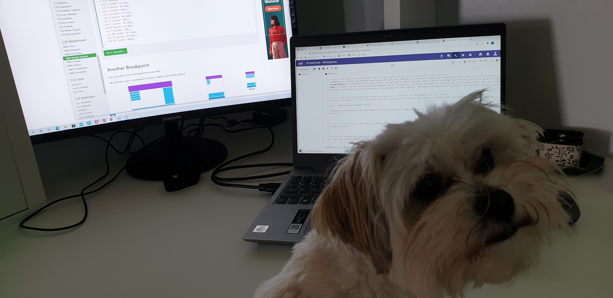

About Me:
Hi there! My name is Leanne and I have recently undergone a career journey transformation. For the last 9 years, I have worked in the travel industry where I have experienced various roles with a strong focus on troubleshooting, problem solving and business improvement. In March 2020, I was stood down from my role as a Systems and Operations Support Consultant due to the border closures caused by the global pandemic, Covid-19. I temporarily took on a role within a government call centre environment to assist other Australians who had also been financially affected by Covid-19. These events allowed me to take a step back and reassess my career journey and I saw this as an opportunity to broaden my skillset and secure my future in a growing industry in an area I was interested in but had never fully explored. I took the plunge and signed up to Coder Academy's fast track boot camp to start my new journey to become a Junior Full Stack Developer.
Technical Skills:


Core Skills:
- Troubleshooting
- Problem Solving
- Customer Service
- Business Analysis/Improvement
- Communication
- Motivated
- Team Player
- Fast learner
Interests:
- Learning new skills
- Getting out into nature
- Travel
Back to top 